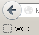
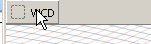
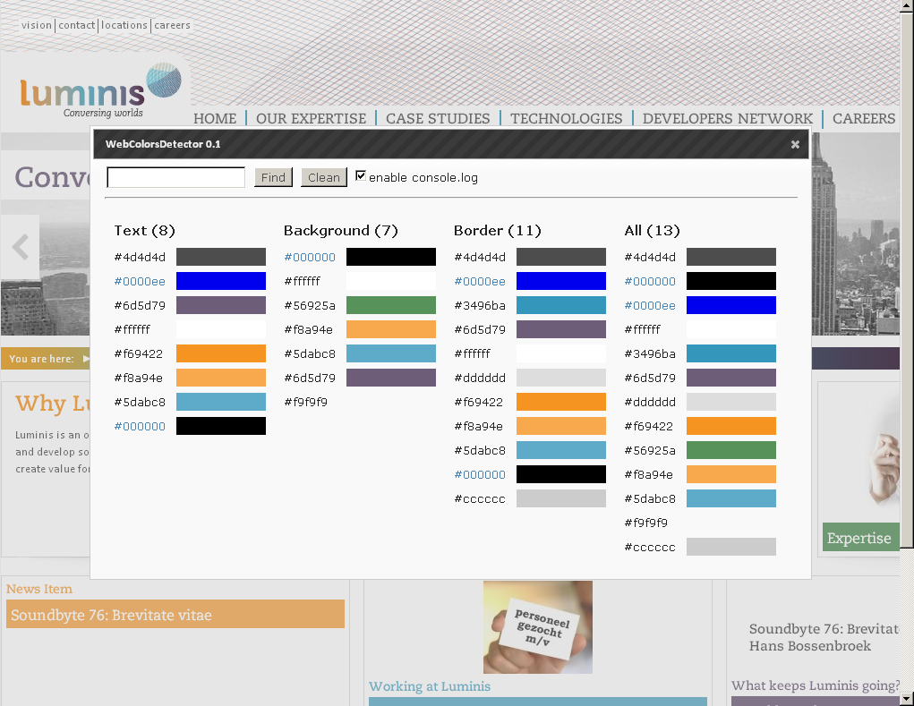

Installation and use
1 Drag the following link into your bookmarks bar: WCD 
2 Open another web page.
3 Click the bookmarklet. 
4 The Webcolordetector opens a dialog displaying all colors used on the page 
WCD is a web-tool that helps you to optimize use of colors on your website.
It is an open source tool, available to everyone free of charge.
WCD is easy to use, so you don't have to be a professional programmer to get started. The program is provided with graphic user interface.
GitHub
It is an open source tool, available to everyone free of charge.
WCD is easy to use, so you don't have to be a professional programmer to get started. The program is provided with graphic user interface.
GitHub